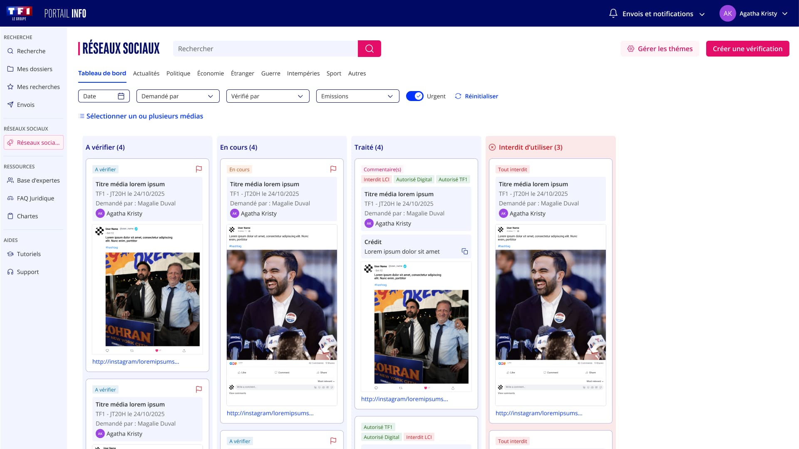
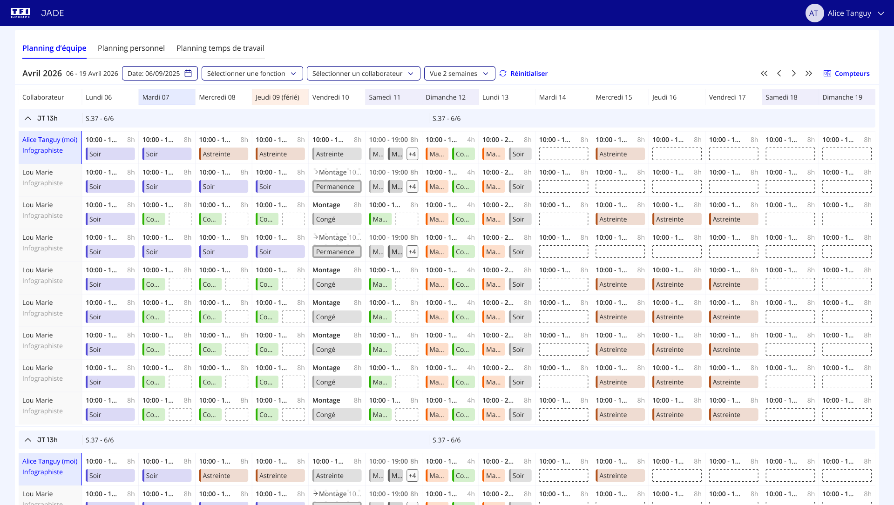
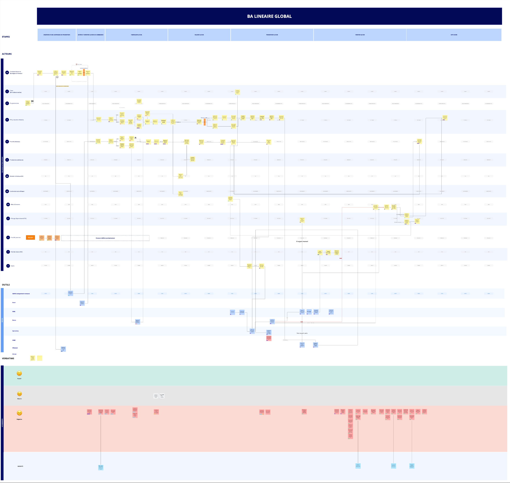

Inès Rondeau
UX & UI / Product Designer senior — 7 ans d'expérience
Du terrain à la solution, sans perdre l'humain.
J'interviens sur tout le cycle produit en adaptant ma démarche aux réalités du terrain et aux objectifs d'entreprise. Consciente que la méthode UX n'est pas un processus linéaire, j'ajuste ma pratique face aux découvertes — pivots, contraintes — avec agilité. Convaincue que la collaboration est la clé, je m'appuie sur l'intelligence collective et ma capacité à me remettre en question pour transformer chaque difficulté en solution.
Je m'appuie sur les outils IA intégrés à mes environnements de travail — Figma, Miro, Confluence — et maîtrise le prompting pour trouver des solutions rapidement, automatiser les tâches répétitives et gagner en productivité au quotidien.
Projets
4 études de cas — Recherche, cadrage, conception et mesure d'usage chez TF1.

Portail info
2024 — 2026Outil News à destination des journalistes et documentalistes : co-concevoir un accès fluide aux archives vidéo pour accélérer la production et fiabiliser l'information face aux enjeux de désinformation (deepfakes, IA).
Voir plus
Jade +
2024 — 2026Outil de consultation et de planification auprès des planificateurs et collaborateurs. Les équipes de TF1 (JRI, DT et production) sont planifiées via Jade en coordination avec les journaux télévisés et les enregistrements d'émissions.
Voir plus
Media supply chain
2024 — 2026Modernisation de l'ensemble du cycle de vie des contenus — identifier les irritants pour améliorer les process. Ce projet montre l'efficacité d'un binôme PO/UX pour réaliser un cadrage en un minimum de temps.
Voir plus
Répertoire de données
2025 — 2026Transformer la recherche silotée en un patrimoine de connaissances partagé, actionnable et durable.
Voir plus